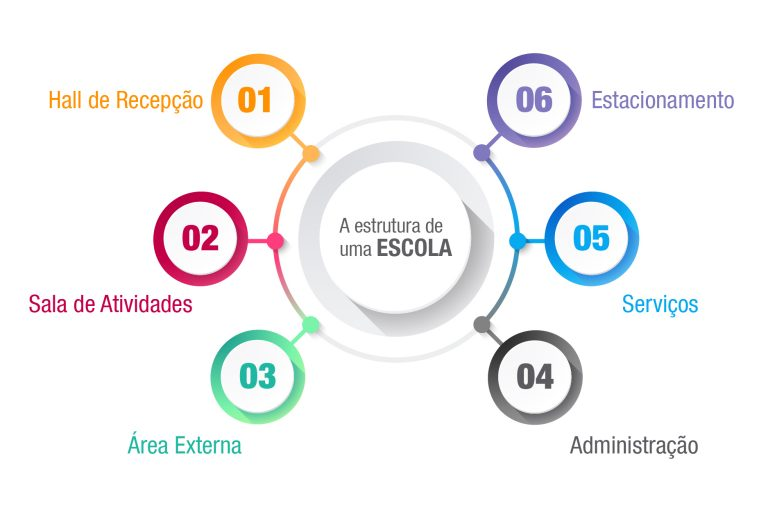

NOSSA ESTRUTURA

Nossa escola conta com ambientes seguros e acolhedores, totalmente adaptados para as necessidades dos estudantes e pensados para potencializar o seu desenvolvimento nas diferentes fases. A estrutura da nossa escola exprime uma organização no plano consciente, e corresponde a uma ordenação racional, deliberada pelo Poder Público. A estrutura total de uma escola é todavia algo mais amplo, compreendendo não apenas as relações ordenadas conscientemente mas, ainda, todas as que derivam da sua existência enquanto grupo social.